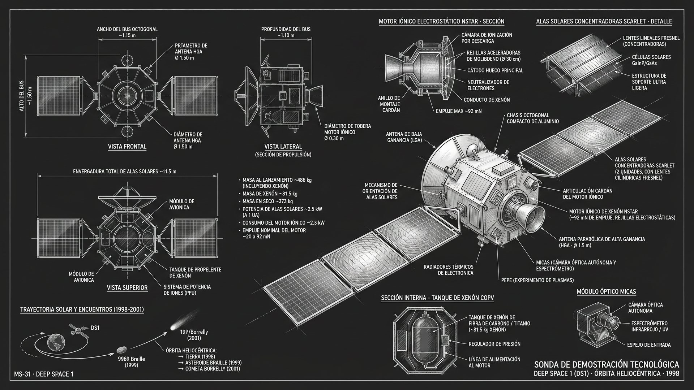

Deep Space 1

Voló con un motor que empujaba con iones de xenón, casi sin fuerza pero sin parar, y probó doce tecnologías nuevas de una sola vez. Además se guiaba sola, sin ayuda desde Tierra.
Apagado definitivo del motor iónico el 18 de diciembre de 2001, tras 16.265 horas de funcionamiento y unos 4,3 km/s de cambio de velocidad. Un intento de contacto en marzo de 2002 no tuvo éxito. Personas: Marc Rayman, Colleen Hartman, Charles Elachi
Lo que hizo
- Mi encargo — Probar en vuelo doce tecnologías de alto riesgo de una sola vez, entre ellas un motor iónico y un programa que guiaba la nave sin ayuda desde Tierra. Las doce pruebas salieron bien.
- Empujar sin parar — Mi motor de xenón sumó 16.265 horas y un cambio de velocidad de unos 4,3 km/s, el mayor logrado por una nave con propulsión propia. Gasté el 90% del xenón que llevaba.
- Más de lo previsto — Estaba diseñada para once meses de misión y operó más de tres años. El 18 de diciembre de 2001 se apagó el motor y, tras el intento fallido de marzo de 2002, ya no hubo más contacto.
Modelo 3D, chat y cómic, en tres idiomas
Fuentes
- science.nasa.gov/mission/deep-space-1/
- www.jpl.nasa.gov/nmp/ds1/quick_facts.html
- www.jpl.nasa.gov/news/nasa-bids-farewell-to-the-successful-deep-space-1-mission/
Ver el índice completo · Proyecto del NASA Space Apps Challenge 2026. Contenido con fuentes citadas.